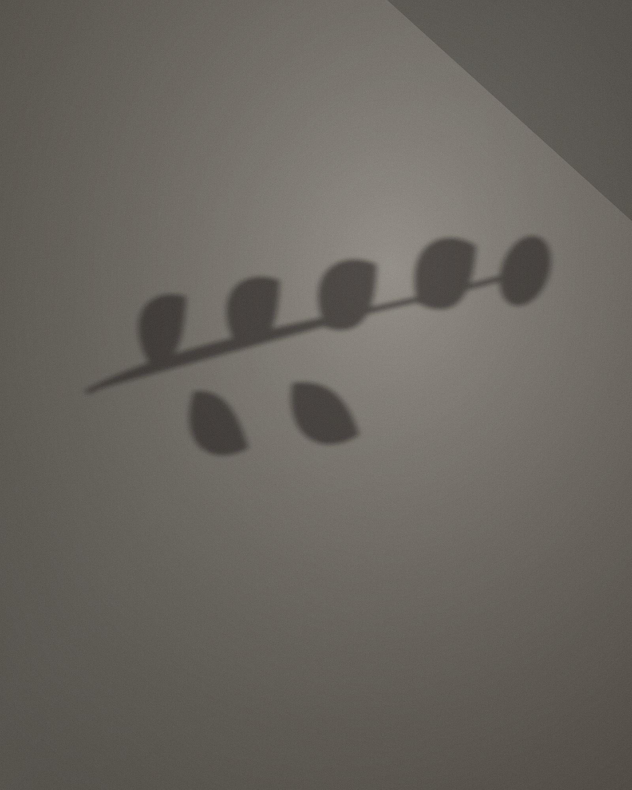
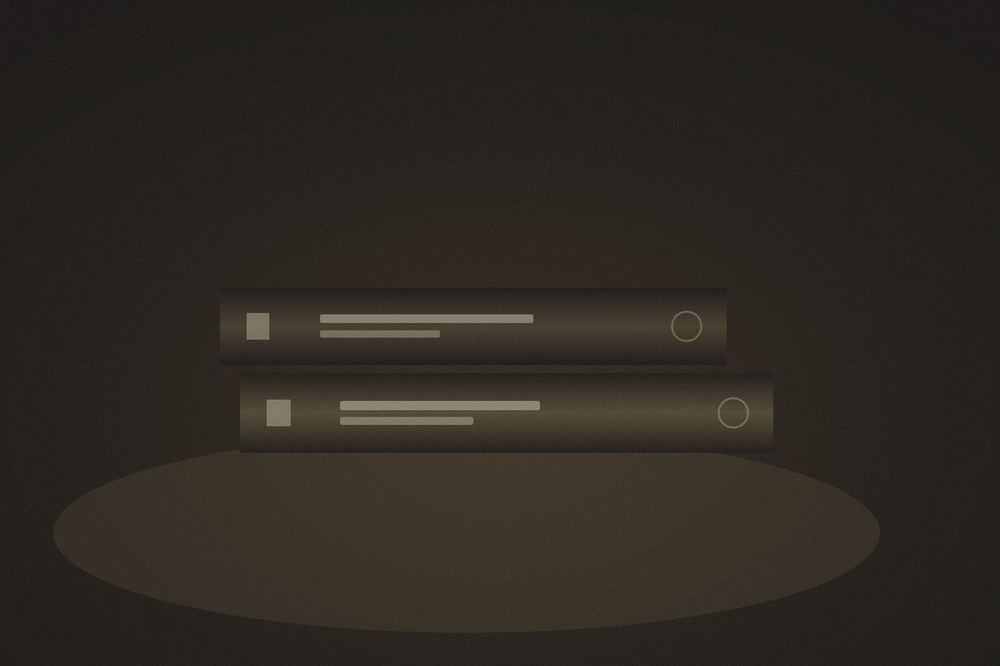
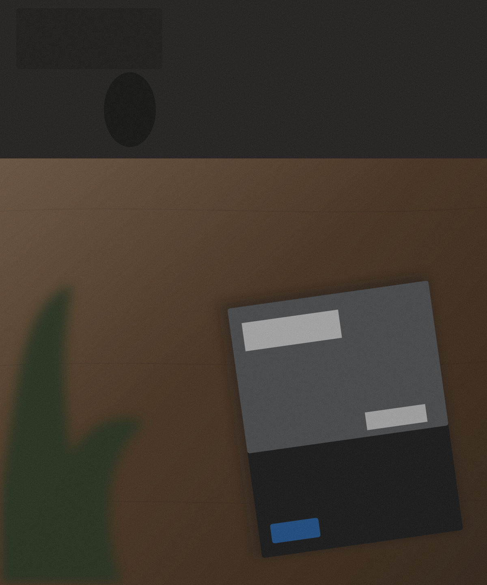

01
光の檻a cage of light
引っ越しの段ボールに挿した造花のひまわり。ブラインドの縞が壁を斜めに横切り、花とその影が同じ重さで並んだ。生活が一番むき出しになる瞬間。
View the series →
between the light
朝の斜光がブラインドを抜けて壁に縞をひく、その十五分だけを待つ。被写体は花でも本でも机でもいい。私が探しているのは、光がそこを通り過ぎた“証拠”のほうだ。完璧に整えられた一枚より、偶然そこに在った静けさを信じている。
このポートフォリオは作品集というより、一冊の薄い雑誌に近い。頁をめくる速度で、影が伸び、また退いていく。
Folio 01 — 04
四つの断片。同じ午後の、異なる光。
01
引っ越しの段ボールに挿した造花のひまわり。ブラインドの縞が壁を斜めに横切り、花とその影が同じ重さで並んだ。生活が一番むき出しになる瞬間。
View the series →
02
暗がりに沈んだ机の上、一筋の光だけが背表紙をなぞる。読まれることを待つ物の、静かな存在感。黒の中の黒を、どこまで残せるか。
View the series →
03
胡桃材のデスク、半分隠れた観葉植物、開かれたカタログ。手前のボケが視線をゆっくり奥へ運ぶ。働く場所もまた、編集できる風景だ。
View the series →影は、光が 正直 になる場所だ。 — Notebook, an afternoon in March
Ryota Gu は東京を拠点に、静物・建築・暮らしの断片を撮るビジュアルストーリーテラー。広告的な完璧さよりも、午後の斜光やブラインドの縞といった“通り過ぎる光”に価値を置く。
写真とエディトリアルデザインの境界を行き来し、雑誌・ブランド・空間のためのビジュアルを手がける。一枚ごとに、削れるものを削り、残るべき静けさを残す。
Let's make something quiet
© 2026 Ryota Gu. All frames reserved. — 無断転載を禁ず.